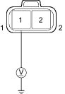

DTC P1112: Variable Swirl Control Valve (VSCV) Circuit Open
- Check the ''On Board Diagnostic (OBD) System Check''.
Was the OBD System Check performed?
YES – Go to step 2.
NO – Go to OBD System Check. 
- Turn the ignition switch OFF.
- Disconnect the VSCV connector.
- Turn the ignition switch ON (II).
- Measure voltage between the VSCV 2P connector terminals No. 1 and body ground.

Wire side of female terminals
Is there battery voltage?
YES – Go to step 6.
NO – Repair open in the wire between the VSCV and the main relay.
- Turn the ignition switch OFF.
- Disconnect the ECM A connector.
- Connect the VSCV connector terminals No. 1 and No. 2 with a jumper wire.
- Turn the ignition switch ON (II).
- Measure voltage between the ECM A connector terminals No. 18 and body ground.

Is there battery voltage?
YES – Go to step 11.
NO – Repair open in the wire between the VSCV and the ECM connector terminal No. 7.
- Turn the ignition switch OFF.
- Connect the VSCV connector.
- Connect the DVM the ECM connector terminals No. 18 and body ground.
- Turn the ignition switch ON (II).
Is there B+?
YES – Go to inspection.
NO – Substitute a known-good ECM and recheck. If symptom/indication goes away, replace the original ECM.
| NOTICE |
The battery power supply short circuit to 5 V power supply damages the ECM.